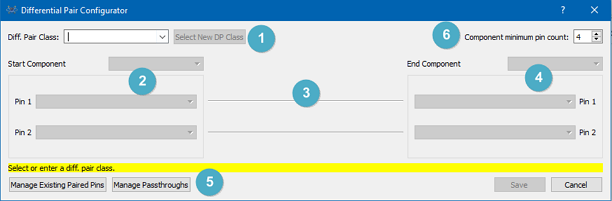
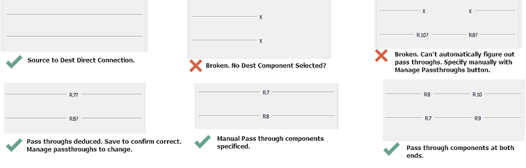

On the schematic there are two tasks required for a diff pair, namely to identify the differential pair pins and then to name the diff pair itself. Both of these are done with the diff pair configurator tool which is launched from the right click context menu on one of the two diff pair wires.

The differential Pair Configurator when opened.
Name of the diff pair class. This is used when setting clearances and separations for the diff pair. Can use an existing one if , for example, you have multiple channels.
The start component and the two diff pair pins on the start component.
Shows whether the diff pair signal path is completely specified from source to destination.

Examples of how the Signal Path Graphics inform you of configuration progress.
The end component and the two diff pair pins on that component.
Manually specify pass through components if the heuristic fails to do it correctly. A deduced pass through will be suffixed with a question mark. If correct save will commit, if incorrect specify manually via the Manage Passthroughs button.
A pass through has 2 pins on at least one of the diff pair lines. A tap, branch or shunt is not a pass through component and will be ignored by the configurator. The goal of managing the passthroughs is to specify the two pins of the component that are on the line - a simple task for a two pin passive but possibly needs manually specifying for a 4-pin part spanning both lines.
Since the start and end component are unlikely to be 2 pin devices this setting serves only to remove the clutter from the component pin listings.
See Also:
Schematic Setup Workflow and Examples